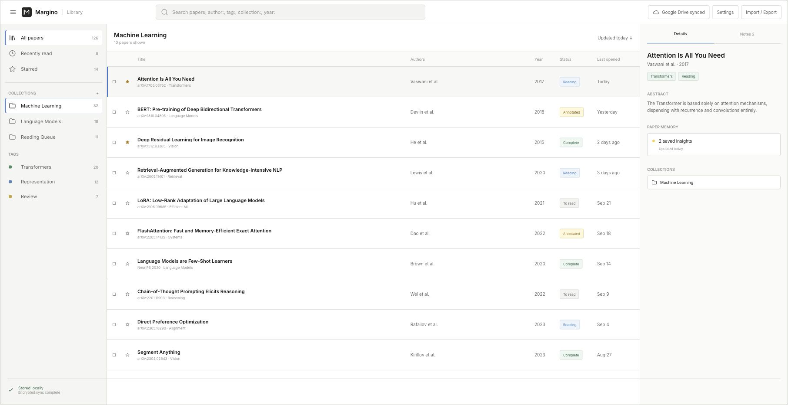

Start with a passage.
Ask about the text you selected, with the paper as context.
A HOME FOR YOUR RESEARCH
Read, annotate, and think with AI.
Right where you found the paper.
Your PDF is the workspace. Not another chat window.
Illustrative product demo · Example paper: Attention Is All You Need
A closer look at working inside the paper.
Select a passage. Ask a question. Follow a page-linked citation back to the source.
Explore source-linked AI ↗ONE PAPER. ONE WORKSPACE.
The passage, the note, the question.
No more piecing it all back together.
The dominant sequence transduction models are based on complex recurrent or convolutional neural networks...
AI lives beside the page—not in a separate tab.
Ask about the text you selected, with the paper as context.
Use page-linked citations to return and check the original.
Questions and answers stay with this paper.
PAPER MEMORY
Come back to your notes, previous questions, and saved context. Every paper has a place to pick up where you left off.
“Useful framing for comparing attention heads.”
Attached to the paper. Saved locally.Collections, tags, and search.
A library that grows with your work.

Local-first by design.
Sync and AI are choices, not requirements.
BROWSERReader · annotations · library
LOCAL STORAGEIndexedDB · OPFS
OPTIONAL SYNCEncrypted sync · your account
Connect an OpenAI-compatible API directly, or use a ChatGPT subscription through the separately installed Native Host. Model availability depends on your provider and account.
No Margino document backend. Using AI sends the requested context to your chosen provider. Google Drive sync is optional.
Margino